감정평가사-1차-2교시 (2013-06-29 기출문제)
1과목: 감정평가관계법규
1. 재무보고를 위한 개념체계 상 재무제표 구성요소 및 인식에 관한 설명으로 옳지 않은 것은?
- 자산은 과거 사건의 결과로 기업이 통제하고 있고 미래경제적효익이 기업에 유입될 것으로 기대되는 자원이다.
- 부채는 현재 의무의 이행에 따라 경제적효익을 갖는 자원의 유출 가능성이 높고 결제될 금액에 대해 신뢰성 있게 측정할 수 있을 때 재무상태표에 인식한다.
- 비용은 자산의 감소나 부채의 증가와 관련하여 미래경제적효익이 감소하고 이를 신뢰성 있게 측정할 수 있을 때 포괄손익계산서에 인식한다.
- 수익은 자산의 증가나 부채의 감소와 관련하여 미래경제적효익이 증가하고 이를 신뢰성 있게 측정할 수 있을 때 포괄손익계산서에 인식한다.
- 자본은 소유주 지분의 공정가치로 측정하여 재무상태표에 인식한다.
(정답률: 알수없음)

2. 포괄손익계산서에 관한 설명으로 옳은 것은?
- 기업은 예외적인 경우를 제외하고 수익에서 매출원가 및 판매비와관리비(물류원가 등을 포함)를 차감한 영업이익(또는 영업손실)을 포괄손익계산서에 구분하여 표시한다.
- 비용을 성격별로 분류하는 기업은 매출원가, 감가상각비, 기타 상각비와 종업원급여비용을 포함하여 비용의 기능에 대한 추가 정보를 공시한다.
- 재분류조정은 당기나 과거 기간에 기타포괄손익으로 인식되었다가 당기에 자본잉여금으로 재분류된 금액을 의미한다.
- 기타포괄손익의 항목은 세후금액으로 표시할 수 없으며, 관련된 법인세 효과 반영 전 금액으로 표시하고 각 항목들에 관련된 법인세 효과는 단일 금액으로 합산하여 표시한다.
- 기업은 재무성과를 설명하는 데 필요하다면 특별항목을 비롯하여 추가항목을 포괄손익계산서에 재량적으로 포함할 수 있으며, 사용된 용어와 항목의 배열도 필요하면 수정할 수 있다.
(정답률: 알수없음)
3. (주)한국은 20×1년 1월 1일 내용연수 10년, 잔존가치 ￦0인 건물을 ￦20,000,000에 취득하여 정액법으로 상각하고 있다. 원가모형을 적용하는 건물의 20×2년 12월 31일 회수가능액은 ￦12,800,000이고, (주)한국은 이에 대한 손상차손을 인식하였다. 20×3년 12월 31일에는 회수가능액이 ￦16,000,000으로 회복되는 경우, 건물과 관련된 회계처리가 (주)한국의 20×3년 당기순이익에 미치는 영향은?
- ￦1,200,000 증가
- ￦1,200,000 감소
- ￦3,200,000 증가
- ￦3,200,000 감소
- ￦4,200,000 증가
(정답률: 알수없음)
4. (주)감평은 20×1년 1월 1일 영업활동에 사용할 목적으로 다음과 같은 건물을 취득하였다. 다음 자료를 이용하여 (주)감평이 20×2년 인식해야 할 재평가손실(당기손실)은?
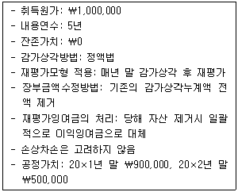
- ￦75,000
- ￦100,000
- ￦175,000
- ￦200,000
- ￦275,000
(정답률: 알수없음)
5. 재평가모형을 적용하고 있는 (주)한국은 20×1년 1월 1일 건물을 ￦10,000,000에 구입하였는데, 내용연수는 5년, 잔존가치는 ￦2,000,000이고 정액법으로 감가상각하고 있다. (주)한국은 20×1년 말과 20×2년 말 재평가한 결과, 건물의 공정가치는 각각 ￦7,000,000과 ￦6,000,000으로 판단되었다. 한편 20×2년 1월 1일 건물을 점검한 결과 연수합계법이 보다 체계적이고 합리적인 것으로 추정되어 감가상각방법을 변경하였고, 잔존가치는 ￦0으로 추정되었다. 20×2년 말 재평가와 관련하여 재무제표에 인식되는 내용으로 옳은 것은? (단, 매년 말 감가상각 후 재평가한다.)
- 재평가이익(당기이익) ￦1,800,000
- 재평가잉여금(기타포괄이익) ￦1,800,000
- 재평가이익(당기이익) ￦800,000
재평잉여금(기타포괄이익) ￦1,000,000 - 재평가이익(당기이익) ￦1,400,000
재평가잉여금(기타포괄이익) ￦400,000 - 재평가손실(당기손실) ￦1,800,000
(정답률: 알수없음)
6. (주)한국은 20×1년 7월 1일 사옥신축을 위하여 (주)민국과 건설계약을 체결하였다. 사옥의 건설기간은 20×1년 7월 1일부터 20×2년 12월 31일까지이다. (주)한국은 동 사옥건설과 관련하여 20×1년 7월 1일과 10월 1일에 각각 ￦3,000,000과 ￦6,000,000을 지출하였다. 건설기간동안 (주)한국의 차입금과 관련된 내용은 다음과 같다.
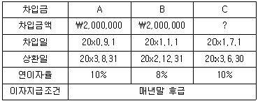
차입금 A와 차입금 B는 일반차입금이며, 차입금 C는 동 사옥건설을 위하여 차입한 특정차입금으로 (주)한국은 차입과 동시에 사옥건설을 위하여 전액 지출하였다. (주)한국이 동 사옥건설과 관련하여 20×1년도에 자본화한 일반차입금의 차입원가가 ￦135,000이라면, (주)한국이 금융기관으로부터 차입한 차입금 C는? (단, 이자는 월할계산한다.)
- ￦750,000
- ￦1,000,000
- ￦2,000,000
- ￦2,500,000
- ￦3,000,000
(정답률: 알수없음)
7. (주)대한은 20×1년 초 정부보조금 ￦3,000,000을 지원받아 기계장치(내용연수 3년, 잔존가치 ￦1,000,000)를 ￦10,000,000에 취득하였다. (주)대한은 기계장치에 대해 원가모형을 적용하며, 연수합계법으로 감가상각한다. (주)대한이 정부보조금을 기계장치의 차감항목으로 회계처리하였다면, 20×2년 말 기계장치의 장부금액은?
- ￦1,000,000
- ￦1,500,000
- ￦2,000,000
- ￦2,500,000
- ￦3,000,000
(정답률: 알수없음)
8. (주)감평은 20×1년 7월 1일 건물(공정가치 ￦200,000)이 세워져 있는 토지(공정가치 ￦600,000)를 ￦700,000에 일괄 취득하였다. 건물은 사용목적이 아니어서 취득 즉시 철거하였다. 건물에 대한 철거비용은 ￦20,000이 발생하였으며, 건물철거 후 발생한 폐자재는 ￦10,000에 처분하였다. 토지의 취득원가는?
- ￦525,000
- ￦600,000
- ￦610,000
- ￦710,000
- ￦720,000
(정답률: 알수없음)
9. (주)대한은 20×1년 1월 1일 공장건물을 ￦5,000,000에 취득하여 사용하기 시작하였다. (주)대한은 공장건물에 대해 취득 이후 원가모형을 적용하고 감가상각방법으로 정액법을 선택하였다(내용연수는 20년, 잔존가치는 ￦0). (주)대한은 20×6년 1월 1일 공장건물의 사용을 중단하고 투자부동산으로 전환하여 임대를 시작하였다. 분류변경 시점에서 잔여 내용연수는 10년으로 재추정되었고 공정가치모형을 적용하여 회계처리하기로 하였다. 20×6년 1월 1일 공장건물의 공정가치는 ￦3,800,000이었으며 20×5년 12월 31일까지 인식된 손상차손누계액은 ￦150,000이었다. 이러한 분류변경이 20×6년도 당기순이익에 미치는 영향은? (단, 20×6년도 건물의 공정가치는 변동이 없다.)
- ￦380,000 감소
- ￦180,000 감소
- ￦50,000 증가
- ￦150,000 증가
- ￦200,000 증가
(정답률: 알수없음)
10. 무형자산에 관한 설명으로 옳지 않은 것은?
- 무형자산을 최초로 인식할 때에는 공정가치로 측정한다.
- 최초에 비용으로 인식한 무형항목에 대한 지출은 그 이후에 무형자산의 원가로 인식할 수 없다.
- 자산에서 발생하는 미래경제적효익이 기업에 유입될 가능성이 높고 자산의 원가를 신뢰성 있게 측정할 수 있을 때에만 무형자산을 인식한다.
- 자산을 사용가능한 상태로 만드는데 직접적으로 발생하는 종업원 급여와 같은 직접 관련되는 원가는 무형자산의 원가에 포함한다.
- 새로운 지역에서 또는 새로운 계층의 고객을 대상으로 사업을 수행하는데서 발생하는 원가 등은 무형자산 원가에 포함하지 않는다.
(정답률: 알수없음)
11. (주)한국의 20×1년 상품과 관련된 내용은 다음과 같다.
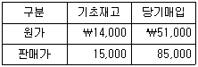
20×1년도 매출(판매가)은 ￦74,000이고, 20×1년 말 상품의 순실현가능가치는 ￦16,000이다. (주)한국은 상품의 원가측정방법으로 소매재고법을 선택하였다. 원가흐름에 대한 가정으로 평균법을 적용하는 경우와 선입선출법을 적용하는 경우 각각의 평가방법에 따른 상품평가손실액의 차이는? (단, 평가손실충당금의 기초잔액은 없는 것으로 한다.)
- ￦400
- ￦600
- ￦900
- ￦1,000
- ￦1,300
(정답률: 알수없음)
12. 재고자산의 측정에 관한 설명으로 옳지 않은 것은?
- 표준원가법으로 평가한 결과가 실제원가와 유사하지 않은 경우에는 편의상 표준원가법을 사용할 수 있다.
- 개별법은 통상적으로 상호 교환될 수 없는 항목이나 특정 프로젝트별로 생산되고 분리되는 재화 또는 용역에 적용하는 방법이다.
- 생물자산에서 수확한 농림어업 수확물로 구성된 재고자산은 순공정가치로 측정하여 수확시점에 최초로 인식한다.
- 소매재고법은 이익률이 유사하고 품종변화가 심한 다품종 상품을 취급하는 유통업에서 실무적으로 다른 원가측정법을 사용할 수 없는 경우에 흔히 사용한다.
- 후입선출법은 대부분의 경우 실제물량흐름과 반대라는 점, 재고층의 청산 시 수익ㆍ비용 대응구조의 왜곡 등 여러 가지 비판으로 한국채택국제회계기준에서는 인정되지 않고 있다.
(정답률: 알수없음)
13. 영업 첫 해인 20×1년 말 현재 (주)대한이 보유하고 있는 재고자산에 관한 자료는 다음과 같다.
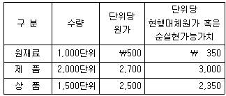
(주)대한은 원재료를 사용하여 제품을 직접 생산ㆍ판매하며, 상품의 경우 다른 제조업자로부터 취득하여 적절한 이윤을 덧붙여 판매하고 있다. 20×1년도 (주)대한이 인식해야 할 재고자산평가손실은?
- ￦0
- ￦225,000
- ￦275,000
- ￦325,000
- ￦375,000
(정답률: 알수없음)
14. 수익인식에 관한 설명으로 옳지 않은 것은?
- 공장에서 이미 검사가 완료된 TV수상기의 설치와 같이 설치과정이 성격상 단순한 경우에는 구매자가 재화의 인도를 수락한 시점에 즉시 수익을 인식한다.
- 인도결제판매(cash on delivery sales)의 경우에는 인도가 완료되고 판매자가 현금을 수취할 때 수익을 인식한다.
- 프랜차이즈 수수료 중 계약에 의한 권리의 계속적인 사용에 부과되는 수수료나 계약기간동안 제공하는 기타 용역에 대한 수수료는 권리를 사용하는 시점이나 용역을 제공하는 시점에 수익으로 인식한다.
- 하나의 입장권으로 여러 행사에 참여할 수 있는 경우의 입장료수익은 각각의 행사를 위한 용역의 수행된 정도가 반영된 기준에 따라 각 행사에 배분하여 인식한다.
- 광고매체수수료는 광고 또는 상업방송이 대중에게 전달될 때 인식하고, 광고제작수수료는 제작이 완성되었을 때 인식한다.
(정답률: 알수없음)
15. (주)대한은 선입선출법을 적용하여 재고자산을 평가하고 있다. 20×1년 기초재고는 ￦30,000이며 기말재고는 ￦45,000이다. 만일 평균법을 적용하였다면 기초재고는 ￦25,000 기말재고는 ￦38,000이다. 선입선출법 적용시 (주)대한의 20×1년 매출총이익이 ￦55,000이라면 평균법 적용시 (주)대한의 20×1년 매출총이익은?
- ￦43,000
- ￦53,000
- ￦55,000
- ￦57,000
- ￦67,000
(정답률: 알수없음)
16. (주)감평은 20×1년 4월 1일에 다음과 같은 조건으로 발행된 채무증권을 취득하고 매도가능금융자산으로 분류하였다.
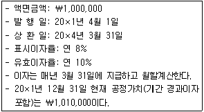
20×1년 12월 31일에 (주)감평이 인식해야 할 매도가능금융자산평가손익은? (단, 현가계수는 아래의 표를 이용하며, 단수차이로 인한 오차가 있으면 가장 근사치를 선택한다.)
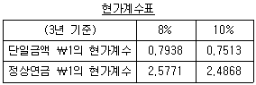
- 이익 ￦9,091
- 이익 ￦48,488
- 손실 ￦10,244
- 손실 ￦11,268
- 손실 ￦11,512
(정답률: 알수없음)
17. (주)한국은 20×1년 3월 1일에 (주)민국의 주식 500주를 주당 ￦1,000에 취득하고, 직접 관련된 수수료 ￦50,000을 지급하였다. (주)한국은 동 주식을 매도가능금융자산으로 분류하였다. 동 주식의 각 연도 말 주당 공정가치는 다음과 같다.
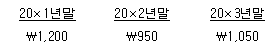
(주)한국이 20×4년 1월 1일에 동 주식 전부를 ￦540,000에 처분하였다면 (주)한국이 동 주식과 관련하여 20×4년도에 인식할 당기손익은?
- 손실 ￦5,000
- 손실 ￦10,000
- 손실 ￦15,000
- 이익 ￦15,000
- 이익 ￦40,000
(정답률: 알수없음)
18. (주)대한은 다음의 사채를 사채권면에 표시된 발행일(20×1년 1월 1일)이 아닌 20×1년 4월 1일에 실제 발행하였다.
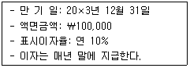
20×1년 4월 1일 (주)대한의 시장이자율이 연 12%일 경우, 20×1년 4월 1일의 사채발행이 동 시점의 (주)대한의 부채총액에 미치는 영향은? (단, 현가계수는 아래의 표를 이용하며, 이자는 월할계산한다. 단수차이로 인한 오차가 있으면 가장 근사치를 선택한다.)
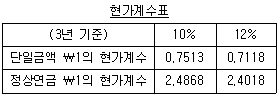
- ￦95,554 증가
- ￦97,698 증가
- ￦98,⑤4 증가
- ￦100,000 증가
- ￦102,500 증가
(정답률: 알수없음)
19. (주)한국은 20×1년 1월 1일 만기 3년, 액면 ￦10,000의 전환사채를 액면발행하였다. 전환사채의 표시이자율은 연 7%이고 이자는 매년 말에 지급한다. 전환조건은 다음과 같다.
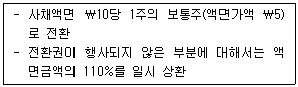
발행시점에 전환권이 부여되지 않은 동일한 조건의 일반사채 시장이자율은 연 11%이었다. 20×2년 1월 1일 사채 액면금액의 35%가 전환되었을 경우, 전환권 행사가 20×2년 1월 1일 (주)한국의 재무상태표 상 자본총계에 미치는 영향은? (단, 이자율 11%의 3년에 대한 단일금액 ￦1의 현가계수와 정상연금 ￦1의 현가계수는 각각 0.7312와 2.4437이며, 단수차이로 인한 오차가 있으면 가장 근사치를 선택한다.)
- ￦86 증가
- ￦1,750 증가
- ￦1,794 증가
- ￦1,880 증가
- ￦3,544 증가
(정답률: 알수없음)
20. 건설업체 (주)감평은 20×1년 5월 1일 (주)대한과 도급계약을 체결하였다. (주)감평은 진행기준에 의해 수익과 비용을 인식하며 진행률은 발생한 누적계약원가를 추정총계약원가로 나눈 비율로 측정한다. 공사기간은 20×4년 12월 31일까지이다. 최초 계약금액은 ￦100,000이었으며, 계약금액의 변동내역, 원가 등에 관한 자료가 다음과 같을 때 20×3년 말 미청구공사 잔액은?
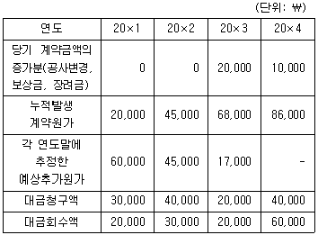
- ￦3,000
- ￦4,000
- ￦5,000
- ￦6,000
- ￦7,000
(정답률: 알수없음)
21. (주)대한은 20×1년도 말에 재고자산이 ￦20,000 증가하였고, 매입채무는 ￦15,000 감소되었으며, 매출채권은 ￦22,000 증가되었다. 20×1년도 매출채권현금회수액이 ￦139,500이고, 매입채무현금지급액이 ￦118,000일 때 20×1년도 매출총이익은? (단, 현금매입 및 현금매출은 없다고 가정한다.)
- ￦38,500
- ￦44,000
- ￦48,500
- ￦58,500
- ￦78,500
(정답률: 알수없음)
22. (주)한국의 20×1년도 재무제표에는 기말 재고자산이 ￦750 과소계상 되어있으나, 20×2년도 기말 재고자산은 정확하게 계상되어 있다. 동 재고자산 오류가 수정되지 않은 (주)한국의 20×1년도와 20×2년도 당기순이익은 각각 ￦3,800과 ￦2,700이다. (주)한국은 오류를 수정하여 비교재무제표를 재작성하고자 한다. 20×1년 초 이익잉여금이 ￦11,500인 경우, 20×2년 말 이익잉여금은?
- ￦14,200
- ￦15,200
- ￦15,950
- ￦18,000
- ￦18,750
(정답률: 알수없음)
23. 20×1년도 (주)한국의 다음 자료를 이용하여 계산된 20×1년도 당기순이익은? (단, 이자지급 및 법인세납부는 영업활동으로 분류한다.)
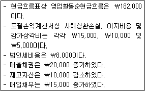
- ￦148,000
- ￦157,000
- ￦163,000
- ￦173,000
- ￦178,000
(정답률: 알수없음)
24. (주)감평은 20×1년 초 다음과 같은 금융리스계약에 의해 기계장치를 사용하기로 하였다.
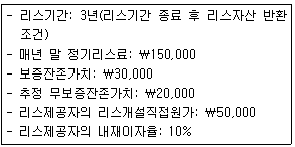
위의 자료에 근거할 때 20×1년 초 동 기계장치의 공정가치는? (단, 이자율 10%의 3년에 대한 단일금액 ￦1의 현가계수와 정상연금 ￦1의 현가계수는 각각 0.7513과 2.4868이며, 단수차이로 인한 오차가 있으면 가장 근사치를 선택한다.)
- ￦345,559
- ￦360,585
- ￦388,086
- ￦395,559
- ￦410,585
(정답률: 알수없음)
25. 20×1년 1월 1일 (주)한국은 이자부 받을어음 ￦1,000,000(만기 9개월, 표시이자율 연 10%)을 거래처로부터 수취하였다. 20×1년 7월 1일 (주)대한은행에서 연 12%로 할인하였다. 동 할인이 제거요건을 충족하는 경우, 매출채권처분손실은? (단, 이자는 월할 계산한다.)
- ￦1,875
- ￦5,000
- ￦7,250
- ￦17,250
- ￦32,250
(정답률: 알수없음)
26. 주식기준보상에 관한 설명으로 옳지 않은 것은?
- 현금결제형 주식기준보상거래의 경우, 제공받는 재화나 용역과 그 대가로 부담하는 부채를 부채의 공정가치로 측정한다.
- 현금결제형 주식기준보상거래의 경우, 부채가 결제될 때까지 매 보고기간말과 결제일에 부채의 공정가치를 재측정하고, 공정가치의 변동액은 기타포괄손익으로 인식한다.
- 주식결제형 주식기준보상거래의 경우, 제공받는 용역의 공정가치를 신뢰성 있게 추정할 수 없다면, 제공받는 용역과 그에 상응하는 자본의 증가는 부여된 지분상품의 공정가치에 기초하여 간접 측정한다.
- 주식결제형 주식기준보상거래의 경우, 부여한 지분상품의 공정가치에 기초하여 거래를 측정하는 경우에는 지분상품의 부여조건을 고려하여 측정기준일 현재 공정가치를 측정한다.
- 기업이 거래상대방에게 주식기준보상거래를 현금이나 지분상품발행으로 결제받을 수 있는 선택권을 부여한 경우에는, 부채요소와 자본요소가 포함된 복합금융상품을 부여한 것이다.
(정답률: 알수없음)
27. (주)대한은 20×1년 12월 31일에 현금 ￦120,000을 지불하고 (주)민국을 합병하였다. 취득일 현재 (주)민국의 식별가능한 순자산 장부금액과 공정가치는 다음과 같다.
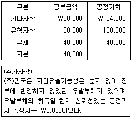
취득일에 합병과 관련하여 (주)대한이 인식할 영업권은?
- ￦28,000
- ￦36,000
- ￦40,000
- ￦72,000
- ￦80,000
(정답률: 알수없음)
28. (주)대한의 현재 유동비율은 200%, 부채비율(=부채/자본×100)은 100%이다. 다음 거래 중 (주)대한의 유동비율과 부채비율을 동시에 감소시키는 경우는?
- 매출채권의 현금회수
- 선급보험료의 1년분 납부
- 매입채무의 현금지급
- 장기차입금의 현금상환
- 상품의 외상매입
(정답률: 알수없음)
29. 20×1년 초 (주)대한의 납입자본의 내역은 다음과 같다.
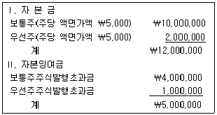
(주)대한은 20×1년 3월 1일에 보통주 400주와 우선주 100주를 ￦5,000,000에 현금발행하였으며, 발행 당시 보통주와 우선주의 주당 공정가치는 각각 ￦10,000으로 동일하였다. 한편, (주)대한은 20×1년 12월 1일에 주당 공정가치가 ￦12,000인 보통주 1,000주를 발행하고 공정가치가 ￦8,000,000인 토지를 출자받았다. 20×1년 말 (주)대한의 보통주주식발행초과금은?
- ￦7,500,000
- ￦8,000,000
- ￦9,000,000
- ￦9,500,000
- ￦11,000,000
(정답률: 알수없음)
30. (주)대한은 20×1년 1월 1일 (주)서울의 의결권주식 30%(300주)를 주당 ￦1,500에 취득함으로써 유의적인 영향력을 행사할 수 있게 되어 관계기업투자주식으로 분류하였다. 취득 당시 (주)서울의 순자산 장부금액은 ￦900,000이었다. 취득 당시 (주)서울의 재고자산과 토지의 공정가치가 장부금액에 비해 각각 ￦100,000과 ￦200,000 더 높고 나머지 자산과 부채는 장부금액과 공정가치가 일치하였다. (주)서울의 재고자산은 20×1년에 모두 판매되었다. 20×1년도 (주)서울이 보고한 당기순이익은 ￦200,000이며 기타포괄이익은 ￦40,000이었다. (주)서울은 20×1년 12월 31일에 ￦30,000의 현금배당을 실시하였다. (주)대한이 지분법을 적용할 경우 20×1년도 말 관계기업투자주식은?
- ￦423,000
- ￦461,000
- ￦483,000
- ￦513,000
- ￦522,000
(정답률: 알수없음)
31. (주)감평은 두 개의 보조부문(수선부문과 동력부문)과 두 개의 제조부문(조립부문과 포장부문)으로 구성되어 있다. 수선부문에 집계된 부문원가는 노무시간을 기준으로 배부하며, 동력부문에 집계된 부문원가는 기계시간을 기준으로 배부한다. 보조부문원가를 제조부문에 배부하기 이전, 각 부문에 집계된 원가와 배부기준 내역은 다음과 같다.
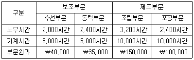
상호배부법을 사용하여 보조부문의 원가를 제조부문에 배부하면, 조립부문에 집계된 부문원가 합계액은? (단, 보조부문 용역의 자가소비분은 무시한다.)
- ￦135,000
- ￦185,000
- ￦190,000
- ￦195,000
- ￦200,000
(정답률: 알수없음)
32. 감평회계법인은 컨설팅과 회계감사서비스를 제공하고 있다. 지금까지 감평회계법인은 일반관리비 ￦270,000을 용역제공시간을 기준으로 컨설팅과 회계감사서비스에 각각 45%와 55%씩 배부해 왔다. 앞으로 감평회계법인이 활동기준원가계산을 적용하기 위해, 활동별로 일반관리비와 원가동인을 파악한 결과는 다음과 같다.
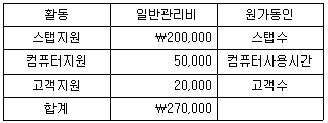
컨설팅은 스탭수 35%, 컴퓨터사용시간 30% 그리고 고객수 20%를 소비하고 있다. 활동기준원가계산을 이용하여 컨설팅에 집계한 일반관리비는 이전 방법을 사용하는 경우보다 얼마만큼 증가 또는 감소하는가?
- ￦32,500 감소
- ￦32,500 증가
- ￦59,500 감소
- ￦59,500 증가
- 변화 없음
(정답률: 알수없음)
33. (주)감평은 가중평균법에 의한 종합원가계산시스템을 도입하고 있다. 직접재료는 공정의 초기에 전량 투입되고 가공원가는 공정 전반에 걸쳐 균등하게 발생된다. (주)감평은 원가계산을 위해 다음과 같은 자료를 수집하였다.
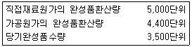
위 자료를 이용하여 계산한 기말재공품의 가공원가 완성도는?
- 50%
- 60%
- 70%
- 80%
- 90%
(정답률: 알수없음)
34. (주)감평은 제조원가 항목을 직접재료원가, 직접노무원가 및 제조간접원가로 분류한 후, 개별-정상원가계산을 적용하고 있다. 기초재공품(작업 No.23)의 원가는 ￦22,500이며, 당기에 개별 작업별로 발생된 직접재료원가와 직접노무원가를 다음과 같이 집계하였다.
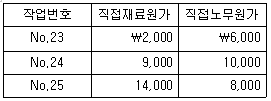
제조간접원가는 직접노무원가에 비례하여 예정배부한다. 기초에 직접노무원가는 ￦20,000으로 예측되었으며, 제조간접원가는 ￦30,000으로 예측되었다. 기말 현재 진행 중인 작업은 No.25뿐이라고 할 때, 당기제품제조원가는?
- ￦34,000
- ￦39,500
- ￦56,500
- ￦62,000
- ￦73,500
(정답률: 알수없음)
35. (주)한국은 동일한 공정에서 A, B, C라는 3가지 결합제품을 생산하고 있다. 결합원가 ￦1,600은 제품별 순실현가치에 비례하여 배부한다. 제품별 자료가 다음과 같을 때, 제품 단위당 매출총이익이 높은 것부터 낮은 순으로 나열한 것은?
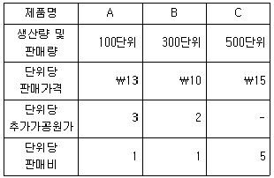
- A > B > C
- A > C > B
- C > B > A
- C > A > B
- B > C > A
(정답률: 알수없음)
36. (주)감평은 제품A를 단위당 ￦100에 판매하고 있는데, (주)한국으로부터 제품A 2,000단위를 단위당 ￦70에 구입하겠다는 제안을 받았다. 제품A의 단위당 원가는 다음과 같다.
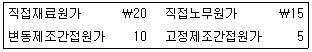
판매비와관리비는 모두 변동비로 매출액의 20%이다. (주)감평은 (주)한국의 제안을 수락할 수 있는 충분한 유휴생산능력을 보유하고 있다. (주)감평이 (주)한국의 제안을 수락하는 경우 영업이익 증가액은?
- ￦2,000
- ￦12,000
- ￦22,000
- ￦40,000
- ￦50,000
(정답률: 알수없음)
37. (주)감평은 선입선출법에 의해 실제원가계산을 사용하고 있다. (주)감평은 전부원가계산에 의해 20×1년 영업이익을 ￦65,000으로 보고하였다. (주)감평의 기초제품수량은 1,000단위이며, 20×1년 제품 20,000단위를 생산하고 18,000단위를 단위당 ￦20에 판매하였다. (주)감평의 20×1년 고정제조간접원가가 ￦100,000이고 기초제품의 단위당 고정제조간접원가가 20×1년과 동일하다고 가정할 때, 변동원가계산에 의한 20×1년 영업이익은? (단, 재공품은 고려하지 않는다.)
- ￦35,000
- ￦40,000
- ￦55,000
- ￦65,000
- ￦80,000
(정답률: 알수없음)
38. (주)감평은 이익중심점인 A사업부와 B사업부를 운영하고 있다. A사업부가 생산하는 열연강판의 변동제조원가와 고정제조원가는 각각 톤당 ￦2,000과 톤당 ￦200이며, 외부 판매가격과 판매비는 각각 톤당 ￦3,000과 톤당 ￦100이다. 현재 B사업부가 열연강판을 외부에서 톤당 ￦2,600에 구입하여 사용하고 있는데, 이를 A사업부로부터 대체받을 것을 고려하고 있다. A사업부는 B사업부가 필요로 하는 열연강판 수요를 충족시킬 수 있는 유휴생산능력을 보유하고 있으며, 사내대체하는 경우 판매비가 발생하지 않을 것이다. A사업부가 사내대체를 수락할 수 있는 최소사내대체가격은?
- ￦2,000
- ￦2,100
- ￦2,200
- ￦2,600
- ￦3,000
(정답률: 알수없음)
39. (주)감평은 표준원가계산을 사용하고 있다. 20×1년 제품 8,600단위를 생산하는데 24,000 직접노무시간이 사용되어 직접노무원가 ￦456,000이 실제 발생되었다. 제품 단위당 표준직접노무시간은 2.75시간이고 표준임률이 직접노무시간당 ￦19.20이라면, 직접노무원가의 능률차이는?
- ￦1,920 불리
- ￦4,800 불리
- ￦4,800 유리
- ￦6,720 불리
- ￦6,720 유리
(정답률: 알수없음)
40. (주)감평은 품질관련 활동원가를 예방원가, 평가원가, 내부실패원가 및 외부실패원가로 구분하고 있다. 다음에 제시한 자료 중 외부실패원가로 집계할 금액은?
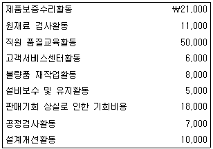
- ￦35,000
- ￦43,000
- ￦45,000
- ￦53,000
- ￦57,000
(정답률: 알수없음)
2과목: 회계학
41. 국토의 계획 및 이용에 관한 법령상 도시ㆍ군관리계획에 해당하는 것은?
- 「국토기본법」상의 국토종합계획
- 「도시개발법」상의 도시개발사업에 관한 계획
- 「수도권정비계획법」상의 수도권정비계획
- 「주택법」상의 대지조성사업지구 지정에 관한 계획
- 「경제자유구역의 지정 및 운영에 관한 특별법」상의 경제자유구역 지정에 관한 계획
(정답률: 알수없음)
42. 국토의 계획 및 이용에 관한 법령에서 정하고 있는 '공공시설'이 아닌 것은?
- 행정청이 설치하는 저수지
- 도로
- 광장
- 방범시설
- 방수설비
(정답률: 알수없음)
43. 국토의 계획 및 이용에 관한 법령에서 명시하고 있는 국토이용 및 관리의 기본원칙에 해당되지 않는 것은?
- 수도권의 질서있는 정비와 균형있는 발전
- 훼손된 자연환경 및 경관의 개선 및 복원
- 주거 등 생활환경 개선을 통한 국민의 삶의 질 향상
- 지역의 정체성과 문화유산의 보전
- 기후변화에 대한 대응을 통한 국민의 생명과 재산의 보호
(정답률: 알수없음)
44. 국토의 계획 및 이용에 관한 법령상 도시ㆍ군기본계획에 관한 설명으로 옳은 것은?
- 시장 또는 군수는 지역여건상 필요하다고 인정되면 인접한 시 또는 군의 관할구역의 전부를 포함하여 도시ㆍ군기본계획을 수립할 수 있다.
- 도시ㆍ군기본계획은 광역도시계획과 도시ㆍ군관리계획 수립의 지침이 되는 계획을 말한다.
- 시장 또는 군수가 도시ㆍ군기본계획을 변경하려면 국토교통부장관의 승인을 얻어야 한다.
- 광역도시계획이 수립되어 있는 지역의 도시ㆍ군기본계획의 내용이 그 광역도시계획의 내용과 다른 때에는 도시ㆍ군기본계획의 내용이 우선한다.
- 수도권에 속하는 인구 10만 이하의 시 또는 군의 경우는 도시ㆍ군기본계획을 수립하지 아니할 수 있다.
(정답률: 알수없음)
45. 국토의 계획 및 이용에 관한 법령상 도시ㆍ군기본계획과 도시ㆍ군관리계획 각각의 정비 주기로 옳은 것은?
- 3년 - 3년
- 5년 - 3년
- 5년 - 5년
- 10년 - 5년
- 10년 - 10년
(정답률: 알수없음)
46. 국토의 계획 및 이용에 관한 법령상 주민이 도시ㆍ군관리계획 입안권자에게 입안을 제안할 수 있는 사항은?
- 주거환경의 정비
- 용도지구의 변경
- 용도지역의 지정
- 지구단위계획구역의 지정
- 용도구역의 변경
(정답률: 알수없음)
47. 국토의 계획 및 이용에 관한 법령상 바다인 공유수면의 매립목적이 그 매립구역과 이웃하고 있는 농림지역의 내용과 같은 경우, 그 매립준공구역의 용도지역에 관한 설명으로 옳은 것은?
- 도시ㆍ군관리계획의 입안 및 결정 절차를 거쳐 농림지역으로 지정된다.
- 도시ㆍ군관리계획의 입안 및 결정 절차를 거쳐 시가화조정구역으로 지정된다.
- 도시ㆍ군관리계획의 입안 및 결정 절차를 거쳐 별도로 지정된다.
- 도시ㆍ군관리계획의 입안 및 결정 절차를 거치지 않고 그 매립의 준공인가일부터 농림지역으로 지정된 것으로 본다.
- 도시ㆍ군관리계획의 입안 및 결정 절차를 거치지 않고 그 매립의 준공인가일부터 수산자원보호구역으로 지정된 것으로 본다.
(정답률: 알수없음)
48. 국토의 계획 및 이용에 관한 법령상 도시ㆍ군계획시설부지의 매수청구에 관한 설명으로 옳은 것은?
- 매수청구대상에는 도시ㆍ군계획시설의 부지로 되어 있는 토지 중 지목이 잡종지인 토지도 포함된다.
- 시장 또는 군수가 해당 도시ㆍ군계획시설사업의 시행자로 정하여진 경우에는 시장 또는 군수가 매수의무자이다.
- 매수의무자가 지방공사인 경우 매수대금은 채권으로 지급할 수 있다.
- 매수의무자는 매수청구대상 토지에 대한 매수청구를 받은 날부터 3개월 이내에 매수 여부를 결정하여 토지소유자에게 알려야 한다.
- 매수의무자가 매수하지 아니하기로 결정한 경우 매수청구를 한 토지소유자는 개발행위허가 없이 그 토지에 공작물을 설치할 수 있다.
(정답률: 알수없음)
49. 국토의 계획 및 이용에 관한 법령상 결정 또는 지정이 실효되는 경우에 해당하는 것은?
- 지형도면을 따로 작성해야 하는 도시ㆍ군관리계획임에도 불구하고 그 결정의 고시일부터 2년이 되는 날까지 지형도면의 고시가 없는 경우
- 도시ㆍ군계획시설결정의 고시일부터 10년이 경과될 때까지 그 시설의 설치에 관한 도시ㆍ군계획시설사업이 시행되지 아니한 경우
- 지구단위계획구역 지정에 관한 도시ㆍ군관리계획결정의 고시일부터 1년 이내에 그 지구단위계획구역에 관한 지구단위계획이 결정ㆍ고시되지 아니한 경우
- 시가화조정구역의 지정에 관한 도시ㆍ군관리계획결정의 고시일부터 3년이 경과한 경우
- 토지거래계약에 관한 허가구역이 지정된 이후 3년간 토지거래계약 허가신청이 없는 경우
(정답률: 알수없음)
50. 국토의 계획 및 이용에 관한 법령상 지구단위계획의 내용으로 반드시 포함되어야 하는 것은? (단, 여기서의 지구단위계획은 기존의 용도지구를 폐지하고 그 용도지구에서의 행위제한을 대체하는 사항을 내용으로 하는 지구단위계획이 아니다.)
- 용도지역이나 용도지구를 대통령령으로 정하는 범위에서 세분하거나 변경하는 사항
- 건축물의 배치ㆍ형태ㆍ색채 또는 건축선에 관한 계획
- 계획적인 개발ㆍ정비를 위하여 구획된 일단의 토지의 규모와 조성계획
- 건축물의 용도제한, 건축물의 건폐율 또는 용적률, 건축물 높이의 최고한도 또는 최저한도
- 간판의 크기ㆍ형태ㆍ색채 또는 재질
(정답률: 알수없음)
51. 국토의 계획 및 이용에 관한 법령상 개발행위허가에 관한 설명으로 옳은 것은?
- 개발행위허가를 받은 행정청이 새로 공공시설을 설치한 경우 새로 설치된 공공시설은 그 시설을 관리할 관리청에 유상으로 귀속된다.
- 개발밀도관리구역 안에서 개발행위허가 신청서를 제출할 때에도 기반시설의 설치 계획서를 첨부하여야 한다.
- 허가권자는 개발행위 불허가처분을 할 경우 불허가처분의 사유를 지체 없이 구두로 알려야 한다.
- 개발행위허가에는 조건을 붙일 수 없다.
- 허가권자는 개발행위허가의 신청 내용이 도시ㆍ군관리계획의 내용에 어긋나는 경우 개발행위허가를 하여서는 아니된다.
(정답률: 알수없음)
52. 국토의 계획 및 이용에 관한 법령상 건축물별 기반시설유발계수가 가장 큰 것은?
- 업무시설
- 숙박시설
- 판매시설
- 제2종 근린생활시설
- 문화 및 집회시설
(정답률: 알수없음)
53. 국토의 계획 및 이용에 관한 법령상 용도지역, 용도지구, 용도구역의 지정에 관한 설명으로 옳지 않은 것은?
- 동일한 토지에 2개 이상의 용도지역을 중복하여 지정할 수 있다.
- 동일한 토지에 2개 이상의 용도지구를 중복하여 지정할 수 있다.
- 동일한 토지에 용도지역과 용도지구를 중복하여 지정할 수 있다.
- 동일한 토지에 용도구역과 용도지역을 중복하여 지정할 수 있다.
- 동일한 토지에 용도구역과 용도지구를 중복하여 지정할 수 있다.
(정답률: 알수없음)
54. 국토의 계획 및 이용에 관한 법령상 관리지역인 A지역은 아직 세부 용도지역으로 지정되지 않은 상태이다. A지역에 대하여 용적률을 정할 때 법령상 기준으로 옳은 것은? (단, 도시ㆍ군계획조례는 고려하지 않는다.)
- 20퍼센트 이상 80퍼센트 이하
- 40퍼센트 이상 80퍼센트 이하
- 50퍼센트 이상 80퍼센트 이하
- 50퍼센트 이상 100퍼센트 이하
- 100퍼센트 이상 150퍼센트 이하
(정답률: 알수없음)
55. 국토의 계획 및 이용에 관한 법령상 시가화조정구역 내에서 허가권자의 허가를 받아 새로이 설치할 수 있는 시설이 아닌 것은?
- 공공도서관
- 119안전센터
- 문화재관리용 건축물
- 사회복지시설
- 복합유통게임제공업의 시설
(정답률: 알수없음)
56. 甲은 토지거래계약에 관한 허가구역에서 공시지가보다 높은 가격으로 토지거래계약 허가를 신청하였으나 불허가 처분을 받았다. 국토의 계획 및 이용에 관한 법령상 甲이 매수청구를 할 경우 매수의 기준이 되는 가격은?
- 공시지가
- 시장가격
- 허가신청서에 적힌 가격
- 주변지역 토지의 실거래가액
- 매입가액에서 물가상승률을 고려한 금액
(정답률: 알수없음)
57. 부동산 가격공시 및 감정평가에 관한 법령상의 용어에 관한 설명으로 옳지 않은 것은?
- 단독주택은 공동주택을 제외한 주택을 말한다.
- '토지등'에는 어업권과 유가증권이 포함된다.
- 지가현황도면이란 당해연도의 산정지가, 전년도의 개별공시지가 및 당해연도의 표준지공시지가가 필지별로 기재된 도면을 말한다.
- 적정가격이란 당해 토지 및 주택에 대하여 통상적인 시장에서 정상적인 거래가 이루어지는 경우 성립될 가능성이 가장 높다고 인정되는 가격이다.
- 지하주차장 면적을 제외하고 주택으로 쓰이는 1개 동의 연면적이 660제곱미터이고 4개층으로 이루어진 주택은 연립주택이다.
(정답률: 알수없음)
58. 부동산 가격공시 및 감정평가에 관한 법령상 단독주택가격의 공시에 관한 설명으로 옳지 않은 것은?
- 국토교통부장관은 용도지역, 건물구조 등이 일반적으로 유사하다고 인정되는 일단의 단독주택 중에서 표준주택을 선정한다.
- 표준주택의 선정은 표준주택의 선정 및 관리지침에 따라야 한다.
- 국토교통부장관은 표준주택가격을 공시할 때에는 표준주택가격의 열람방법을 관보에 공고하여야 한다.
- 국토교통부장관이 따로 정하지 아니한 경우 표준주택가격의 공시기준일은 1월 1일로 한다.
- 국토교통부장관은 공시기준일 이후에 토지의 분할ㆍ합병이나 건물의 신축 등이 발생한 경우에는 대통령령이 정하는 날을 기준으로 하여 표준주택가격을 결정ㆍ공시하여야 한다.
(정답률: 알수없음)
59. 부동산 가격공시 및 감정평가에 관한 법령상 감정평가사에 관한 설명으로 옳은 것은?
- 외국의 감정평가사 자격을 가진 자로서 「부동산 가격공시 및 감정평가에 관한 법률」에 의한 결격사유에 해당하지 아니하는 자는 그 본국에서 대한민국정부가 부여한 감정평가사 자격을 인정하지 않더라도 시ㆍ도지사의 인가를 받으면 감정평가업자의 업무를 행할 수 있다.
- 국유재산을 관리하는 기관에서 5년 이상 감정평가와 관련된 업무에 종사한 자로서 감정평가사 제2차시험에 합격한 자는 감정평가사의 자격이 있다.
- 감정평가사의 자격이 있는 자는 시ㆍ도지사에게 자격등록을 하면 감정평가업을 영위할 수 있다.
- 감정평가사는 감정평가업을 영위하기 위하여 복수의 사무소를 설치할 수 있다.
- 국토교통부장관은 감정평가사가 그 자격증을 다른 사람에게 양도한 경우 그 자격을 취소하여야 한다.
(정답률: 알수없음)
60. 부동산 가격공시 및 감정평가에 관한 법령상 개별공시지가에 관한 설명으로 옳은 것은?
- 국토교통부장관이 정하는 개별공시지가의 조사ㆍ산정지침에 토지가격비준표의 사용에 관한 사항은 포함되지 않는다.
- 개별공시지가를 결정ㆍ공시하는 경우에는 당해 토지와 유사한 시장가치를 지닌다고 인정되는 둘 이상의 표준지의 공시지가를 기준으로 지가를 산정하여야 한다.
- 개별공시지가의 검증에 제공되는 지가조사자료는 개별토지가격의 산정조서 및 그 밖에 토지이용계획에 관한 자료를 말한다.
- 6월 24일에 국유지가 매각되어 사유지로 된 토지로서 개별공시지가가 없는 토지의 개별공시지가는 1월 1일을 기준일로 하여 10월 31일까지 결정ㆍ공시한다.
- 시장ㆍ군수 또는 구청장이 개별공시지가의 검증을 생략하고자 하는 경우에는 개별토지의 지가변동률과 해당 토지가 소재하는 시ㆍ군ㆍ구의 연평균 지가변동률의 차이가 큰 순으로 대상토지를 선정하여 검증을 생략한다.
(정답률: 알수없음)
61. 부동산 가격공시 및 감정평가에 관한 법령상 요구되는 최소 인원수에 관한 설명으로 옳지 않은 것은? (단, 감정평가사는 자격등록 및 갱신등록의 거부사유가 없는 자임을 전제로 한다.)
- 감정평가법인에는 10인 이상의 감정평가사를 두어야 한다.
- 감정평가법인의 주사무소에 주재하는 최소 감정평가사의 수는 3명이다.
- 감정평가법인의 분사무소에 주재하는 최소 감정평가사의 수는 2명이다.
- 감정평가사합동사무소에 두는 감정평가사의 수는 5인 이상으로 한다.
- 국토교통부장관으로부터 업무의 위탁을 받을 수 있는 감정평가법인은 소속 감정평가사의 수가 50인 이상이어야 한다.
(정답률: 알수없음)
62. 부동산 가격공시 및 감정평가에 관한 법령상 「형법」 제129조(수뢰, 사전수뢰)의 적용에 있어서 감정평가사가 공무원으로 의제되는 업무에 해당하지 않는 것은?
- 공공용지의 매수 및 토지의 수용ㆍ사용에 대한 보상을 위한 토지의 감정평가
- 개별주택가격의 검증
- 표준지의 적정가격의 조사ㆍ평가
- 법원에 계속중인 소송 또는 경매를 위한 토지등의 감정평가
- 국ㆍ공유토지의 취득 또는 처분을 위한 토지의 감정평가
(정답률: 알수없음)
63. 부동산 가격공시 및 감정평가에 관한 법령상 표준지공시지가에 대한 이의신청에 관한 설명으로 옳지 않은 것을 모두 고른 것은?
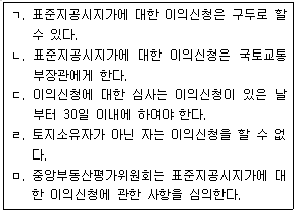
- ㄱ, ㄴ, ㄷ
- ㄱ, ㄷ, ㄹ
- ㄱ, ㄹ, ㅁ
- ㄴ, ㄷ, ㅁ
- ㄴ, ㄹ, ㅁ
(정답률: 알수없음)
64. 부동산 가격공시 및 감정평가에 관한 법령상 표준지공시지가에 관한 설명으로 옳지 않은 것은?
- 표준지의 도로ㆍ교통상황, 지세(地勢)는 표준지공시지가의 공시사항에 포함된다.
- 지상권이 설정되어 있는 표준지의 적정가격을 평가하는 경우에는 당해 지상권으로 토지의 사용ㆍ수익이 제한되는 가치를 반영하여 평가하여야 한다.
- 표준지의 단위면적당 가격에서 단위면적은 1제곱미터로 한다.
- 표준지공시지가는「도시개발법」에 의한 도시개발사업을 위한 환지ㆍ체비지의 매각 또는 환지신청에 적용된다.
- 표준지공시지가결정이 위법한 경우에는 항고소송으로 그 위법 여부를 다툴 수 있다.
(정답률: 알수없음)
65. 국유재산법령상 시효취득에 관한 설명으로 옳은 것은? (다툼이 있으면 판례에 의함)
- 보존용재산은 「민법」상 시효취득의 대상이 된다.
- 일반재산은 취득시효기간 동안 계속하여 일반재산이어야만 취득시효가 완성된다.
- 행정재산이 기능을 상실하여 본래의 용도에 제공되지 않는 상태에 있었다면 공용폐지 없이도 시효취득의 대상이 된다.
- 토지의 지목이 도로이고 국유재산대장에 등재되어 있다면 그 사실만으로 당해 토지는 시효취득의 대상이 되지 않는다.
- 국유 하천부지는 공용개시행위가 있어야만 시효취득의 대상이 되지 않는다.
(정답률: 알수없음)
66. 국유재산법령상 국유재산의 대장과 보고에 관한 설명으로 옳은 것은?
- 국방부장관은 그가 관리하는 항공기가 멸실된 경우에 지체없이 그 사실을 총괄청과 감사원에 보고하여야 한다.
- 총괄청으로부터 일반재산의 관리ㆍ처분에 관한 사무를 위탁받은 투자매매업자가 해당 사무와 관련하여 등기소의 장에게 등기사항증명서의 교부를 청구하려면 수수료를 납부하여야 한다.
- 총괄청은 매년 국유재산관리운용보고서와 검사보고서를 감사원에 제출하여야 한다.
- 총괄청은 중앙관서별로 국유재산에 관한 총괄부를 갖추어 두어 그 상황을 명백히 하여야 하기 때문에 그 총괄부를 전산자료로 대신할 수 없다.
- 중앙관서의 장은 국유재산의 구분과 종류에 따라 그 소관에 속하는 국유재산의 대장ㆍ등기사항증명서와 도면을 갖추어 두어야 하며, 국유재산의 대장은 전산자료로 대신할 수 있다.
(정답률: 알수없음)
67. 국유재산법령상 국유재산에 관한 설명으로 옳은 것은?
- 정부는 정부출자기업체의 고유목적사업을 원활히 수행하기 위하여 자본의 확충이 필요한 경우에는 행정재산과 일반재산을 현물출자할 수 있다.
- 행정재산의 관리에 관한 사무를 위임받은 공무원이 경미한 과실로 그 재산에 대하여 손해를 끼친 경우에도 변상의 책임이 있다.
- 관리전환하려는 국유재산의 감정평가에 드는 비용이 해당 재산의 가액(價額)에 비하여 과다할 것으로 예상되는 경우 총괄청과 중앙관서의 장 또는 중앙관서의 장 간에 무상으로 관리전환하기로 합의하면 국유재산의 관리전환은 무상으로 할 수 있다.
- 국유재산에 관한 사무에 종사하는 직원이 해당 총괄청의 장의 허가 없이 그 처리하는 국유재산을 자기의 소유재산과 교환했다면 총괄청의 장은 이를 취소하여야 한다.
- 「국유재산법」에서 정하는 절차와 방법에 따르지 아니하고 일반재산을 사용하거나 수익한 자는 2년 이하의 징역 또는 1천만원 이하의 벌금에 처한다.
(정답률: 알수없음)
68. 국유재산법령상 일반재산의 매각계약 해제사유로 규정되어 있지 않은 것은?
- 매수자가 매각대금을 체납한 경우
- 매수자가 거짓 진술을 하여 매수한 경우
- 매수자가 부실한 증명서류를 제시하여 매수한 경우
- 용도를 지정하여 매각한 경우에 매수자가 지정된 날짜가 지나도 그 용도에 사용하지 아니한 경우
- 매수자가 다른 사람에게 사용ㆍ수익하게 한 경우
(정답률: 알수없음)
69. 건축법령상 조정(調停) 및 재정(裁定)에 관한 설명으로 옳지 않은 것은?
- 재정은 문서로써 하여야 한다.
- 조정은 3명의 위원으로 구성되는 조정위원회에서 한다.
- 건축분쟁전문위원회는 재정신청이 된 사건을 조정에 회부하는 것이 적합하다고 인정하면 직권으로 직접 조정할 수 있다.
- 당사자가 재정에 불복하여 소송을 제기한 경우 시효의 중단과 제소기간의 산정에 있어서는 재정신청을 재판상의 청구로 본다.
- 재정위원회의 회의는 구성원 과반수의 출석으로 열고 출석한 위원 과반수의 찬성으로 의결한다.
(정답률: 알수없음)
70. 건축법령상 대지에 대해 조경 등의 조치를 하여야 하는 건축물은?
- 녹지지역에 건축하는 건축물
- 면적 5천 제곱미터 미만인 대지에 건축하는 공장
- 상업지역에 건축하는 연면적의 합계가 1천500제곱미터 미만인 물류시설
- 축사
- 연면적의 합계가 1천500제곱미터 미만인 공장
(정답률: 알수없음)
71. 건축법령상 건축위원회에 관한 설명으로 옳지 않은 것은?
- 국토교통부장관, 시ㆍ도지사 및 시장ㆍ군수ㆍ구청장은 각각 건축위원회를 두어야 한다.
- 시장ㆍ군수ㆍ구청장은 자신이 설치하는 건축위원회에 건축분쟁전문위원회를 둘 수 없다.
- 자치구의 경우에는 해당 자치구의 조례로 건축위원회의 조직ㆍ운영, 그 밖에 필요한 사항을 정한다.
- 건축분쟁전문위원회와 분야별 전문위원회의 심의등을 거친 사항은 건축위원회의 심의등을 거친 것으로 본다.
- 건축분쟁전문위원회와 분야별 전문위원회는 건축위원회가 정하는 사항에 대하여 심의등을 한다.
(정답률: 알수없음)
72. 건축법령상 건축물과 분리하여 공작물을 축조할 경우 특별자치도지사 또는 시장ㆍ군수ㆍ구청장에게 신고해야 하는 공작물에 해당하는 것은?
- 높이 5미터의 굴뚝
- 높이 5미터의 광고탑
- 높이 5미터의 기념탑
- 높이 5미터의 고가수조(高架水槽)
- 높이 5미터의 장식탑
(정답률: 알수없음)
73. 측량ㆍ수로조사 및 지적에 관한 법령상 지상 경계를 새로 결정하려는 경우의 기준으로 옳은 것은? (단, 지상 경계의 구획을 형성하는 구조물 등의 소유자가 다르지 않은 경우를 전제로 한다.)
- 연접되는 토지 간에 높낮이 차이가 없는 경우: 그 구조물 등의 중앙
- 연접되는 토지 간에 높낮이 차이가 있는 경우: 그 구조물 등의 상단부
- 도로ㆍ구거 등의 토지에 절토(切土)된 부분이 있는 경우: 그 경사면의 하단부
- 토지가 해면 또는 수면에 접하는 경우: 최소만조위 또는 최소만수위가 되는 선
- 공유수면매립지의 토지 중 제방 등을 토지에 편입하여 등록하는 경우: 안쪽 어깨부분
(정답률: 알수없음)
74. 측량ㆍ수로조사 및 지적에 관한 법령상 토지대장에 등록하여야 할 사항에 해당하지 않는 것은?
- 건축물 및 구조물 등의 위치
- 지적도의 번호
- 개별공시지가와 그 기준일
- 토지의 이동사유
- 소유자의 성명 또는 명칭, 주소
(정답률: 알수없음)
75. 측량ㆍ수로조사 및 지적에 관한 법령상 지목에 관한 설명으로 옳지 않은 것은?
- 사과ㆍ배 등 과수류를 집단적으로 재배하는 토지와 이에 접속된 저장고 등 부속시설물의 부지(주거용 건축물의 부지는 제외)는 “과수원”으로 한다.
- 축산업 및 낙농업을 하기 위하여 초지를 조성한 토지와 이에 접속된 부속시설물의 부지(주거용 건축물의 부지는 제외)는 “목장용지”로 한다.
- 천일제염 방식으로 하지 아니하고 동력으로 바닷물을 끌어들여 소금을 제조하는 공장시설물의 부지는 “염전”으로 한다.
- 「국토의 계획 및 이용에 관한 법률」 등 관계 법령에 따른 택지조성공사가 준공된 토지는 “대”로 한다.
- 제조업을 하고 있는 공장시설물의 부지와 같은 구역에 있는 의료시설 등 부속시설물의 부지는 “공장용지”로 한다.
(정답률: 알수없음)
76. 측량ㆍ수로조사 및 지적에 관한 법령상 토지소유자가 하여야 하는 신청을 대신할 수 있는 자가 아닌 자는?
- 국가나 지방자치단체가 취득하는 토지인 경우: 해당 토지를 관리하는 행정기관의 장 또는 지방자치단체의 장
- 공공사업 등에 따라 학교용지의 지목으로 되는 토지인 경우: 해당 토지를 관리하는 지방자치단체의 장
- 공공사업 등에 따라 제방, 하천의 지목으로 되는 토지인 경우: 해당 사업의 시행자
- 「주택법」에 따른 공동주택의 부지인 경우: 「집합건물의 소유 및 관리에 관한 법률」에 따른 관리인(관리인이 없는 경우에는 공유자가 선임한 대표자) 또는 해당 사업의 시행자
- 「민법」제404조에 따른 채권자
(정답률: 알수없음)
77. 부동산등기법상 등기관이 저당권 설정의 등기를 할 때에 등기원인에 약정이 없더라도 반드시 기록하여야 할 사항을 모두 고른 것은? (단, 저당권의 내용이 근저당권인 경우를 제외한다.)
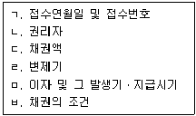
- ㄱ, ㄴ
- ㄹ, ㅂ
- ㄱ, ㄴ, ㄷ
- ㄴ, ㄷ, ㄹ
- ㄷ, ㄹ, ㅁ
(정답률: 알수없음)
78. 부동산등기법상 권리에 관한 등기 절차에 관한 설명으로 옳지 않은 것은?
- 등기원인에 권리의 소멸에 관한 약정이 있을 경우 신청인은 그 약정에 관한 등기를 신청할 수 있다.
- 등기명의인인 사람의 사망으로 권리가 소멸한다는 약정이 등기되어 있는 경우에 사람의 사망으로 그 권리가 소멸하였을 때에는, 등기권리자는 그 사실을 증명하여 단독으로 해당 등기의 말소를 신청할 수 있다.
- 등기권리자가 등기의무자의 소재불명으로 인하여 공동으로 등기의 말소를 신청할 수 없을 때에는 「민사소송법」에 따라 공시최고를 신청할 수 있다.
- 말소된 등기의 회복을 신청하는 경우에 등기상 이해관계 있는 제3자가 있을 때에는 그 제3자의 승낙이 있어야 한다.
- 대지권을 등기한 후에 한 건물의 권리에 관한 등기는, 그 등기에 건물만에 관한 것이라는 뜻이 부기되어 있을 때에도 대지권에 대하여 동일한 등기로서 효력이 있다.
(정답률: 알수없음)
79. 부동산등기법상 등기의 단독신청에 관한 설명으로 옳지 않은 것은?
- 등기명의인표시의 변경이나 경정의 등기는 해당 권리의 등기명의인이 단독으로 신청한다.
- 소유권보존등기 또는 그 말소등기는 등기명의인으로 될 자 또는 등기명의인이 단독으로 신청한다.
- 가등기명의인은 단독으로 가등기의 말소를 신청할 수 없다.
- 판결에 의한 등기는 승소한 등기권리자 또는 등기의무자가 단독으로 신청한다.
- 부동산표시의 변경이나 경정의 등기는 소유권의 등기명의인이 단독으로 신청한다.
(정답률: 알수없음)
80. 부동산등기법상 등기를 할 때 부기로 하여야 하는 것을 모두 고른 것은?
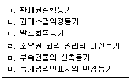
- ㄱ, ㄴ, ㄷ
- ㄱ, ㄷ, ㅁ
- ㄴ, ㄷ, ㄹ
- ㄴ, ㄹ, ㅂ
- ㄹ, ㅁ, ㅂ
(정답률: 알수없음)